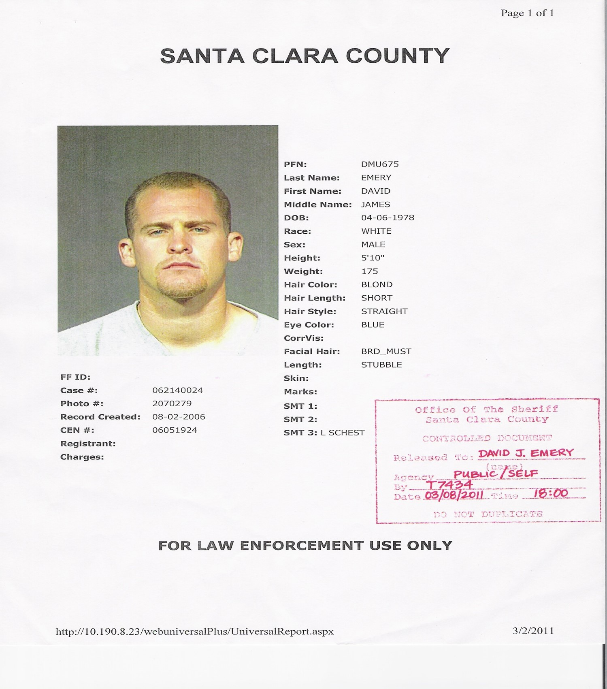

My Personal Profile: David Emery

About me
I love electronic music i.e., Techno, Drum & Bass, Deep House, and Tech House.
I obtian my Master's degree in Psychology i.e., I worked in the serve mental health field for 5 years e.g., Schizophrenia, Borderline Personaility Disorders, and Bi-Polar.
I am orginally from San Jose, California i.e., Silicon Valley home of the tech, and I started to learn how to code when I was 10 years of age. I walked away from computer's yet always had a desire to pick it back up.
I started using drugs at the age of 13, and my drug addiction lead to a Meth addiction for 10 years.
